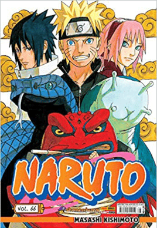
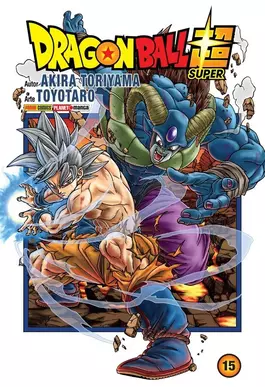
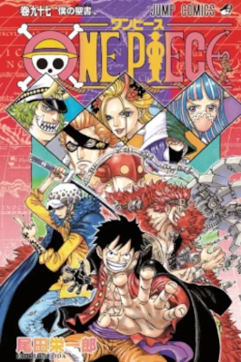

Me chamo Eduardo da Silva Sousa, entusiasta da tecnologia, estou aprendendo JAVA SCRIPT, HTML5 e CSS3. gosto de jogar basquete, sair com meus amigos. e estou gostndo muito de estudar sobre tecnologia
meus animes favoritos
Naruto
Porque naruto? Naruto me ensionou que eu posso ser alquem na vida mesmo vindo de baixo.
Dragon ball
Porque dragon ball? dragon ball me ensinou a alem de lutar pelos meu objetivos, tambem a ter paciencia e treinr sempre que possivel para melhorar
One piece
Porque one piece? one piece me ensiono a sonhar alto e nunca desacreditar dos meu sonhos! se eu acredito eu vou chegar la. basta lutar pelos meus sonhos